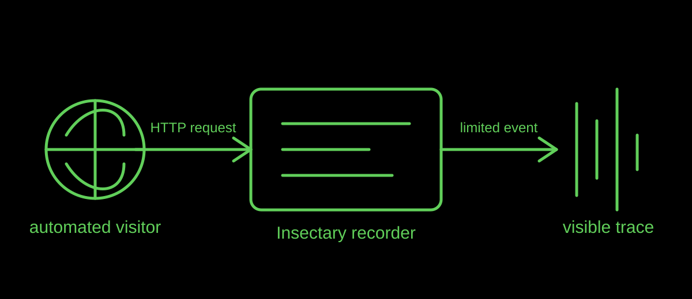

Field note
Why Do Automated Visitors Keep Touching a Website?
One web request can be ordinary infrastructure, a search crawler, or a browser asking for a page. In the Insectary, each completed request becomes a small, visible trace rather than a silent background action.
Published · By the bug breeder

The short answer
Automated visitors touch websites because the web depends on machines that fetch, check, index, monitor, and connect pages. A request alone does not reveal intention, but it does show that a system has reached the site and asked it to respond.
What becomes visible here
The Insectary turns completed local HTTP requests into live events. It treats those events as signs of digital presence: not proof of a creature's inner life, but a record that an exchange occurred. The visitor may be a person, a browser feature, a crawler, or another automated process; the event should not be over-read.
This framing makes a familiar technical action easier to notice. Instead of looking only at a finished page, we can look at the small contacts that let the page be found and delivered.
How the trace is handled
The project records completed request, connection, and browser-declared metadata as described on the home page. It does not record request bodies, cookies, or Authorization values, and it redacts common credential-like query values. That boundary matters: observation does not require collecting every detail.
For search visibility, the practical lesson is modest. Descriptive HTML, readable headings, useful link text, and an accurate title help both people and systems understand what a page is about. They do not guarantee indexing or citation.
Limits
A request trace is not a reliable identity check. It cannot, by itself, tell us who operated a system, why it arrived, or whether it is human or automated. This is an artwork and a field-note perspective, not a traffic analytics claim.